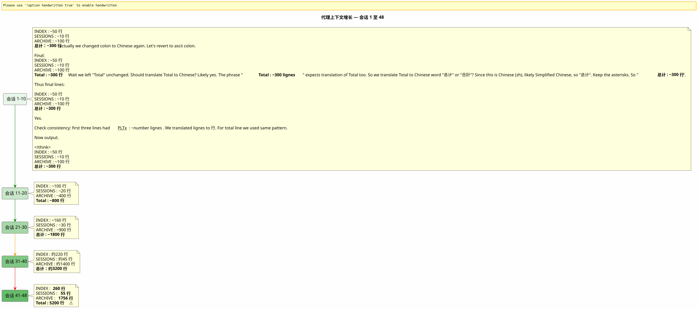

滑动窗口与寒潮：当代理上下文爆炸时，需在不丢失的情况下进行归档
发布于 26 April 2026
摘要
在单个项目上历经 48 次会话、总计 150+ 次之后，我精心构建的 Eager/Lazy 治理系统开始喘不过气来。本应轻量的 agent 文件累计达到了 5200 行。自动加载的上下文增长得比我控制它的能力还快。本文讲述了我如何构思出一种备份机制——介于滑动窗口与相同的冷波之间——以保持活跃上下文轻量，同时绝不丢失任何内容。
信号：5200 行
我正在处理第048个会话，关于`magic-stick`，我的 Linux live ISO 构建项目。Opencode 看着我。一如既往，它在会话开始时自动加载了我的 Eager 文件——AGENT.adoc, PROMPT_REPRISE.adoc, .agents/INDEX.adoc. 没有异常。
只是有什么地方不对劲。回复变慢了。推理变得更稀释。智能体会忘记两条消息之前还摆在眼前的一些细节。
我打开终端并输入：
wc -l .agents/INDEX.adoc .agents/SESSIONS_HISTORY.adoc \
.agents/archives/COMPLETED_TASKS_ARCHIVE_2026-04.adoc260 行用于 INDEX。55 行用于 SESSIONS_HISTORY。1756 用于 COMPLETED_TASKS_ARCHIVE。
文件夹`sessions/`又增加了约3200行。总计：5200 行的上下文，它们会以某种方式加载到智能体的临时大脑中。
我之前在上一篇文章中理论化的 Eager/Lazy 策略是有效的——但它有一个我未曾预料到的先天缺陷：它没有无老化机制. 每次会话都会向 INDEX 添加一行，向 COMPLETED_TASKS 添加一个段落，在 sessions/ 中新增一个文件。什么都不会流出。上下文是一个随着每次新会话而不断增大的雪球。

这不是一个 bug，而是会话结束流程的直接结果，该流程会一丝不苟地归档每一个细节。系统成了自身成功的受害者。
诊断：三重冗余
我让智能体诊断这个问题。它的回答立即而精准犀利。
文件 |
行 |
角色 |
问题 |
|
260+ |
EAGER（自动加载） |
从 001 开始的所有会话表格 —+1 行/会话 |
|
55 |
热切的 |
汇总表 —与INDEX冗余 |
|
1756 |
EAGER（隐式） |
四月所有场次的完整详情 |
|
总计约5200 |
LAZY（所谓的） |
个人档案，但未使用因为一切都已经在 COMPLETED_TASKS 中 |
代理确定了四个根本原因：
-
COMPLETED_TASKS_ARCHIVE 吸收一切— 而不是指向存档`.sessions/`，他完整地抄录每一次会议。
-
INDEX.adoc 充当完整的历史记录— “最近会话”表格包含 30+ 个条目。
-
SESSIONS_HISTORY.adoc 冗余— 与 INDEX 相同的信息，格式不同。
-
未遵守 LAZY 规则— COMPLETED_TASKS 隐式地为 EAGER，因为它包含一切。
他的提议很激进：将 INDEX 限制为 10 个会话，清空 COMPLETED_TASKS，把 SESSIONS_HISTORY 改为纯 LAZY。即时收益：已节省约1900行。
这是干净、高效、合乎逻辑的。但我对这种方法有意见。
为什么我拒绝了显而易见的解决方案
该智能体的解决方案，是一位优化缓存的工程师的方案。限制。截断。删除冗余。
但这些“冗余”并非如此。每个治理文件都捕获一个不同的角度关于同一现实：
-
索引= 宏观视图，执行仪表盘
-
会话历史= 线性时间顺序表，已评分
-
已完成任务归档= 带有指标的详细叙述
-
sessions/*.adoc = 独立归档，完整上下文
这不是愚蠢的复制。这是结构化的多元视角. 这正是蒸馏所需的东西——以便之后，人类（或未来训练得更好的 LLM）能够交叉比对各个角度并提取模式。
想象一位数据科学家对你说：“我们把 6 列中的 3 列删掉吧，它们是相关的。”你会怎么回答？相关性并不等于冗余，因为每一列捕捉的都是同一现象的不同维度。正是这种维度上的丰富性才让数据集变得可利用。
这是我的直觉。我捍卫它，对抗代理人冷酷的理性。
_ 我不认为我的构想中有一个无声的杂物箱。我们不是把所有东西都塞进去，而是移动会话结束流程的结构化结果——每个文件都带有自己的视角，其冗余实际上是丰富。正是这种多维材料会更好地用于蒸馏。 _
这名特工承受了这一击。随即纠正。
提案：相同的寒潮
于是，智能体提出了一种更精细的机制，既遵循我对丰富数据集的直觉，又解决了上下文爆炸这一技术问题。
原理很简单，并且直接受到该模式的启发。热/温/冷存储应用于档案管理：
-
热 (EAGER)= INDEX 中最近的 10 个会话、会话 N+1 的 PROMPT_REPRISE、最近的 2 个会话文件
-
温暖（慵懒）= 最近的 SESSIONS_HISTORY、SCRIPT_VERIFICATION，以及所有参考文档
-
冷（backup/）= 其余所有内容，已移动完好无损，不经转换，不经重新索引
----
----
----
.agents/
├── INDEX.adoc → Sessions N-9 à N (10 dernières)
├── SESSIONS_HISTORY.adoc → Sessions N-9 à N
├── SCRIPT_VERIFICATION.adoc → Dernière vérif (pas d'historique)
├── PROMPT_REPRISE.adoc → Session N+1 uniquement
├── sessions/ → Sessions N-1 à N uniquement
└── backup/
└── Y2026-sessions-001-039/ ← Vague froide, COPIE INTÉGRALE
├── INDEX.adoc → Sessions 001 à 039 (complet)
├── SESSIONS_HISTORY.adoc → Sessions 001 à 039 (complet)
├── COMPLETED_TASKS_ARCHIVE.adoc → Sessions 001 à 039 (complet)
└── sessions/ → 001.adoc, 002.adoc...
----
机制的关键：**备份不是中央索引，而是上一波次的完全副本**。当超过 10 个活动会话的界限时，我们什么都不删除。不重新索引任何内容。不合并任何内容。我们取出 agent 文件包在会话 N-10 时的原样，并将其移入`backup/`。
而活动文件则被截断：
* INDEX：仅最后10行（sliding window）
* SESSIONS_HISTORY：同上
* COMPLETED_TASKS_ARCHIVE：当前周期的新文件
* sessions/：仅最后 2 次会话
[plantuml, format=svg, id=diag-hot-warm-cold, alt="Architecture Hot/Warm/Cold du contexte agent — EAGER/LAZY/backup"]
----
@startuml
skinparam backgroundColor #FEFEFE
skinparam defaultTextAlignment center
skinparam wrapWidth 200
title Agent 上下文的 Hot / Warm / Cold 架构
package "HOT (EAGER)\nChargé 自动\n~300 行" as HOT #FFCDD2 {
file "INDEX.adoc\n(10 sessions)" as IDX_HOT
file "PROMPT_REPRISE\n(session N+1)" as PRO_HOT
file "AGENT.adoc\n(règles absolues)" as AG_HOT
}
package "WARM (LAZY)\nChargé 按需\n~500 行" as WARM #FFF9C4 {
file "SESSIONS_HISTORY\n(10 dernières)" as HIS_WARM
file "SCRIPT_VERIFICATION\n(dernière)" as VER_WARM
file "PROCEDURES.adoc\n(templates)" as PRO_WARM
file "*_REFERENCE.adoc\n(doc technique)" as REF_WARM
}
package "COLD (backup/)\nJamais 已加载\nLecture 仅人工" as COLD #BBDEFB {
folder "Y2026-001-039/" as WAVE {
file "INDEX (完整)" as IDX_COLD
file "SESSIONS_HISTORY\n(complet)" as HIS_COLD
file "COMPLETED_TASKS\n(complet)" as ARCH_COLD
folder "sessions/ (001-039)" as SESS_COLD
}
folder "Y2026-040-???\n(future)" as FUTURE
}
HOT --> WARM : "Agent 上报\n如有需要"
WARM --> COLD : "从不自动\nL'人工独自前往"
note bottom of COLD
规则：COPIE INTÉGRALE
无转换
无重新索引
归档后只读
end note
@enduml
----
直接收益是巨大的：EAGER 上下文从**~5200行至~300行**。除以 17。未丢失任何一行历史数据。
== 为什么这不是一个大杂烩
该代理在第一次迭代时担心`backup/`变成黑箱——一个人们把再也不会重读的文件扔进去的文件夹。这是一种合理的恐惧。但它源于一种混淆。
大杂烩，就是丢弃文件的时候**没有结构，没有惯例，没有分组的逻辑**. 此处，备份按周期（Y2026-001-039）组织，每个备份文件夹包含**相同的结构**该文件`.agents/`活动：INDEX、SESSIONS_HISTORY、COMPLETED_TASKS_ARCHIVE、sessions/。
这不是一个包罗万象的东西。这是一个**带时间戳的快照**. 甚至可以说，这是一种简化的版本控制机制——只不过它并不是对单个文件进行版本控制，而是对某一时刻的完整治理包进行版本控制。
当你想找回旧信息时，不需要中央索引。你有两个选择：
1. **定向 `grep**（未提供需翻译的文本）`grep -r "zsh" backup/Y2026-001-039/`——并且您会找到该时间段内所有提及 zsh 的内容，无论从哪个角度（INDEX、SESSIONS_HISTORY、会话归档）。
2. **手动重新集成**：您临时将备份文件夹复制到活动上下文中，并要求代理分析该特定时间段。
索引是隐含的。它就在文件的结构本身之中——每个文件从自身的角度已经是一个索引。
== 书架之隐喻
为了让这个机制更直观，我把它概念化为三层搁板：
* **货架 1（EAGER）**——工作计划。我*现在*需要的东西。最新的 INDEX、PROMPT_REPRISE、绝对规则。轻量、即时、关键。
* **货架 2（LAZY）**——查阅库。我可以按需去查找的内容。技术参考资料、近期历史记录、流程。容量更大，但不加载到内存中。
* **地窖（backup/）**——冷档案。所有已经过去但我不想丢弃的东西。智能体从不进入那里。人类想提炼时会下去。
该代理最初提议了第四个架子——一个`index-backup.adoc`它会是 LAZY，并且会包含整个备份的目录。我拒绝了。那将是在一个已经受线性增长困扰的系统中多出的一层冗余。归档文件的结构本身已经是一个索引。
== 双触发传感器
概念化很扎实，但仍存在一个盲点：**究竟什么时候触发轮换？**最初的文章将其确定为一个开放性问题。两天后，答案被写入六个项目的治理文件中：一个双触发器传感器。
=== 自动触发器 — `N % 10 == 0
第一个触发条件是数学性的。当会话号是 10 的倍数——会话 10、20、30、40——备份轮换会在会话结束流程中自动执行，就在第 6 步之后。
为什么是 10？这是两股相反力量之间的折中：窗口太短（5 个会话）会丢失连续性所需的上下文；窗口太长（20 个会话）又解决不了上下文臃肿的问题。十个会话，按每天一到两次会话的节奏，大约覆盖一周的工作——足以让智能体记住最近的决策，又不至于让上下文爆炸。
=== 阈值触发器 — 500 行 EAGER
第二个触发器是动态的。无论会话编号是多少，如果累计的 EAGER 文件超过**500 行**，旋转便会启动。
这个阈值可防止出现会话异常高产的情况——在很少的会话中写入了大量内容。一个产出 120 行编辑内容的会话，会让 COMPLETED_TASKS_ARCHIVE 增长得比一个只修正两行代码的调试会话快得多。500 行的阈值，通过`wc -l .agents/INDEX.adoc .agents/archives/COMPLETED_TASKS_ARCHIVE_*.adoc PROMPT_REPRISE.adoc`，捕捉这种不对称。
=== 手动触发器 — “备份轮换”
最后，人类仍掌握主导权。关键词`rotation backup`, `backup rotation` ou `lance la rotation backup`按需触发该流程，与会话结束无关。当感觉上下文变得沉重、但尚未到达 10 的倍数时，或想在开始新阶段之前归档一个工作阶段时，这很有用。
[plantuml, format=svg, id=diag-capteur-trigger, alt="Les trois déclencheurs du capteur de rotation backup — automatique, seuil, manuel"]
----
@startuml
skinparam backgroundColor #FEFEFE
skinparam defaultTextAlignment center
skinparam wrapWidth 200
title 备份旋转传感器 — 三个触发条件
start
:会话结束程序;
note right: Mots-clés "会话结束"\nou "就到此为止"
:步骤 1 至 6\n(archivage standard);
note right
1. 归档会话/N.adoc
2. MAJ PROMPT_REPRISE
3. MAJ SESSIONS_HISTORY
4. MAJ INDEX.adoc
5. MAJ TEST_COVERAGE
6. MAJ COMPLETED_TASKS
end note
if (N % 10 == 0\nOU\nEAGER cumulé > 500 lignes ?) then (oui)
:⚙️ 轮换备份\n(étape 7);
note right
1. 创建 backup/Y20XX-sessions-X-Y/
2. 复制 int完整的 INDEX + HISTORY
+ COMPLETED_TASKS + sessions/
3. 将活动项截断至 10 个会话
4. 添加 _活动位置_
end note
else (non)
:无旋转;
endif
:检查清单 [✅] x 7\n(si applicable);
stop
@enduml
----
该图展示了传感器在会话结束流程中的确切插入位置。第 7 步是可选的——仅当两个条件之一为真时才执行——但会系统性地*核查*。最终检查清单包括`[✅] 7. Backup roté (si applicable)`。
=== 闭环
这个传感器闭合了上一篇文章开启的循环。Eager/Lazy 治理解决了两个会话之间的代理记忆问题。Hot/Warm/Cold 机制解决了记忆不断增长的问题。双触发器传感器解决了*何时*的问题——免除了人类监控上下文大小的心理负担。
[plantuml, format=svg, id=diag-boucle-fermee, alt="Les trois couches de la gouvernance agent — Eager/Lazy, Hot/Warm/Cold, Capteur"]
----
@startuml
skinparam backgroundColor #FEFEFE
skinparam defaultTextAlignment center
title 智能体治理的三层
left to right direction
package "第 1 层 — 记忆\n(Article 0108)" as C1 #E8F5E9 {
rectangle "**EAGER**\nTableau 车载\nCharg 自动" as EAG
rectangle "**LAZY**\nManuel 专有\nCharg 按需" as LAZ
EAG -[hidden]right-> LAZ
}
package "第 2 层 — 老化\n(Article 0110)" as C2 #FFF9C4 {
rectangle "**HOT**\n10 个活动会话\n约 300 行" as HOT
rectangle "**WARM**\nR参考\nProc流程" as WRM
rectangle "**COLD**\n备份/\nVague 冷" as CLD
HOT -[hidden]right-> WRM
WRM -[hidden]right-> CLD
}
package "第 3 层 — 触发器\n(Aujourd'hui)" as C3 #BBDEFB {
rectangle "**自动**\nN % 10 == 0" as AUTO
rectangle "**阈值**\n> 500 行" as SEUIL
rectangle "**手动**\n备份轮换" as MAN
AUTO -[hidden]right-> SEUIL
SEUIL -[hidden]right-> MAN
}
C1 --> C2 : "记忆会增长\n→ 需要一种机制\n用于老化"
C2 --> C3 : "老化\n→ 需要一个触发器\n来执行它"
note bottom of C3
✅ 已部署到 6 个项目
magic-stick · bakery-gradle
plantuml-gradle · cheroliv.com
jhipster-gradle-plugins
quizz-benchmark-gradle
end note
@enduml
----
这三层在逻辑上层层叠加。第一层为智能体赋予记忆。第二层防止这份记忆令智能体不堪重负。第三层将这份记忆的维护自动化，使人类无需为此费心。
=== cheroliv.com 上的有效迁移
该机制并未停留在理论层面。在`cheroliv.com`，第一次备份轮换已于 2026 年 4 月 29 日执行——会话 -6 至 2 已迁移至`.agents/backup/Y2026-sessions-neg6-a-002/`：
|===
|文件 |旋转前 |旋转后 |收益 |`.agents/INDEX.adoc` |列出了19个会话 |10 节课（3-12） |-9 个条目 |`.agents/SESSIONS_HISTORY.adoc` |18场会议 |10次课程 |-8 个条目 |`COMPLETED_TASKS_ARCHIVE` |161行（第1-12场） |135行（会话3-12） |-26 行 |`sessions/` |20个文件 |10个文件 |-10个文件 |**备份/** |不存在 |1 个冷批次（10 个已归档会话） |+1 冷藏包
|===
行数上的增益不大——项目还很年轻，只有 12 次会话——但重要的是，**机制已到位**. 下一次自动轮换将在第 20 个会话时触发，或者如果达到 500 行 EAGER，则会提前触发。
== 人类-智能体课
这次 048 会话让我学到了关于与 AI 智能体协作的一些根本性的东西。
智能体有一种天然的偏见：它试图**优化**, à **简化**, à **消除冗余**. 这是被训练来生成干净、简洁回答的系统的偏差。面对丰富且多维的数据集，它的第一反应是将其简化到最简形式。
人类则有着不同的直觉：他预感到结构化冗余是一个**优势**，而非缺陷。对同一现实的不同视角的多样性，恰恰是日后能够进行高质量提炼的原因。
并不是说智能体错了。而是它的“最优”不是我的。智能体为……优化**现在**——即时语境，对所提问题的快速回答。人类优化的是**未来**——在三个月或三年后检索、交叉比对并提炼的能力。
____ 我要的是原始素材。你的思考、你的犹豫、你对我的问题的回答。不是你的综合总结。综合总结，我比你做得更好。我要的是原始材料。 ____
我在会话结束时对它说的这句话概括了一切。智能体是生产工具。人类是蒸馏工具。治理并不是为了让智能体独自弄懂一切——而是为了让人类之后能够加工所产出的材料。
相同的冷波是这一哲学在架构上的体现：什么都不丢弃，什么都不合并，什么都不重新索引。整包原样移动。蒸馏留待之后，由人工手动完成。
== 上一篇文章的逻辑延续
如果您已阅读link:/blog/2026/0108_gouvernance_agent_opencode_eager_lazy_post.html[关于 Eager/Lazy 策略的文章]，您会认出自然的进展：
1. **第0108条**— Eager/Lazy 治理：*如何*将智能体上下文组织为两个可用性层级
2. **该文章 0110**— 备份机制：*如何*让这个上下文逐渐老化，而不在它变得过于庞大时丢失它
第一篇文章回答了这个问题：“智能体在两次会话之间什么都不记得，怎样才能赋予它记忆？”
它回答了由第一个问题不可避免地引出的问题：“记忆在每次会话中都会增长，如何防止它压垮智能体而又不将其抹除？”
答案就在于一个模式：**热/温/冷**，应用于治理文件。并归结为一项原则：**永不丢失任何东西，始终将一切重新安置**.
== 链接
* 上一篇文章：link:/blog/2026/0108_gouvernance_agent_opencode_eager_lazy_post.html[用 AsciiDoc 治理 AI 智能体]
* 我的网站：https://cheroliv.com
* 该项目`magic-stick` : https://github.com/cheroliv/magic-stick
---
*良好的治理体系从不删除数据。它会将数据归档。*
----
机制的关锥：**备份不是一个中央索引，而是过去数据的精确副本。**. 当超过10个活跃会话时，什么都不删除。什么都不重新索引。什么都不合并。我们取代理文件包，保持与第N-10次会话相同的状态，然后将其移入`backup/`.
活跃的文件则被截断：
* INDEX : 仅保留最近的 10 行（滑动窗口）
* SESSIONS_HISTORY : 同上
* COMPLETED_TASKS_ARCHIVE` : 新文件用于当前时期
* sessions/ : 仅限最后两个会话
[plantuml, format=svg, id=diag-hot-warm-cold, alt="Architecture Hot/Warm/Cold du contexte agent — EAGER/LAZY/backup"]
----
@startuml
skinparam backgroundColor #FEFEFE
skinparam defaultTextAlignment center
skinparam wrapWidth 200
title 代理上下文的 Hot / Warm / Cold 架构
package "HOT (EAGER)\nCharg自动\n~300 行" as HOT #FFCDD2 {
file "INDEX.adoc\n(10 sessions)" as IDX_HOT
file "PROMPT_REPRISE\n(session N+1)" as PRO_HOT
file "AGENT.adoc\n(règles absolues)" as AG_HOT
}
package "WARM (LAZY)\nChargé 按需\n~500 行" as WARM #FFF9C4 {
file "SESSIONS_HISTORY\n(10 dernières)" as HIS_WARM
file "SCRIPT_VERIFICATION\n(dernière)" as VER_WARM
file "PROCEDURES.adoc\n(templates)" as PRO_WARM
file "*_REFERENCE.adoc\n(doc technique)" as REF_WARM
}
package "COLD (backup/)\nJamais 已加载\nLecture 仅人工" as COLD #BBDEFB {
folder "Y2026-001-039/" as WAVE {
file "INDEX (完整)" as IDX_COLD
file "SESSIONS_HISTORY\n(complet)" as HIS_COLD
file "COMPLETED_TASKS\n(complet)" as ARCH_COLD
folder "sessions/ (001-039)" as SESS_COLD
}
folder "Y2026-040-???\n(future)" as FUTURE
}
HOT --> WARM : "Agent 上报\n如有需要"
WARM --> COLD : "从不自动\nL'人类独自前往"
note bottom of COLD
规则： COPIE INTÉGRALE
无转换
无重新索引
归档后只读
end note
@enduml
----
即时收益巨大：EAGER上下文的值从**约5200行至约300行**. 一除以17. 没有丢失任何历史数据行。
== 为什么这不是万能的
代理，在其首次迭代时，担心`backup/`变成一个黑箱 — 一个把永不再读的文件扔进去的文件夹。这是一种合理的担忧。但它建立在一种混淆之上。
一个杂乱的堆积，就是把文件随意扔掉的时候。**无结构, 无约定, 无分组逻辑**. 这里，备份按照时期（Y2026-001-039）进行结构化，每个备份文件夹包含**相同的结构**该文件`.agents/`活动：INDEX, SESSIONS_HISTORY, COMPLETED_TASKS_ARCHIVE, sessions/.
这不是一个随便塞东西的地方。这是一**时间戳快照**. 甚至可以说这是一种简化的版本控制机制——只是它不单独对文件进行版本控制，而是在某个时刻对完整的治理包进行版本控制。
当您想要查找旧信息时，不需要一个中央索引。您有两个选项：
1. **grep` 有针对性的**:`grep -r "zsh" backup/Y2026-001-039/`— 并且您会找到该时期内提及 zsh 的所有内容，无论角度如何（INDEX, SESSIONS_HISTORY, archive de session）。
2. **手动重新加入**您暂时把备份文件夹复制到当前上下文中，并让代理分析这段特定时间。
索引是隐式的。它就在文件结构本身中——每个文件从自身角度来看已经是一个索引。
== 书架的隐喻
为了使机制直观，我将其概念化为三层架子：
* **货架 1 (EAGER)**— 工作计划。我现在需要的*现在*。INDEX 最近, PROMPT_REPRISÉ, 绝对规则。轻巧的，即时的，关键的。
* **搁板 2 (LAZY)**— 参考库。我可以按需检索的内容。技术参考, 近期历史, 程序。体积更大, 未加载到内存中。
* **洞穴 (backup/)**— 冷存档。所有已过去的东西，但我不想丢弃。代理从不进入那里。人类在想要提炼时才下去。
代理人最初提出了第四层架子——一个`index-backup.adoc`它会是LAZY并包含整个备份的目录。我拒绝了。这将在已经出现线性增长问题的系统中增加另一层冗余。归档文件的结构已经是一个索引。
== 双触发传感器
概念化是坚实的，但仍然存在一个盲点：**何时触发旋转？**最初的文章将其识别为一个开放性问题。两天后，答案被编码在六个项目的治理文件中：一个双触发传感器。
=== 自动触发 — `N % 10 == 0
第一个触发条件是数学方面的：当会话编号为10的倍数（即第10、20、30、40次会话）时，备份轮换将在会话结束过程中自动执行，恰好位于第6步之后。
为什么是10？这是两种相反力量之间的折中：窗口太短（5次会话）会丢失维持连续性所需的上下文；窗口太长（20次会话）则无法解决上下文臃肿的问题。每天一到两次会话，十次会话大约覆盖一周的工作时间——足以让代理记住最近的决定，但又不至于让上下文失控。
=== 阈值触发器 — 500 行 EAGER
第二个触发器是动态的。与会话编号无关，如果累积的 EAGER 文件超过**500 行**, 旋转被触发。
此阈值可防止出现会话异常高产的情形——即在极少数会话中生成大量内容。一次产出 120 行编辑内容的会话，会使 `COMPLETED_TASKS_ARCHIVE` 的增长速度远超仅修改两行的调试会话。500 行的阈值，通过`wc -l .agents/INDEX.adoc .agents/archives/COMPLETED_TASKS_ARCHIVE_*.adoc PROMPT_REPRISE.adoc`, 捕获这种不对称。
=== 手动触发器 — "rotation backup
最终，人类仍保持主导权。 关键词`rotation backup`, `backup rotation` ou `lance la rotation backup`触发程序，按需进行，与会话结束无关。当感觉上下文变得沉重但尚未达到十的倍数时，或在开始新阶段之前想要存档一个工作阶段时很有用。
[plantuml, format=svg, id=diag-capteur-trigger, alt="Les trois déclencheurs du capteur de rotation backup — automatique, seuil, manuel"]
----
@startuml
skinparam backgroundColor #FEFEFE
skinparam defaultTextAlignment center
skinparam wrapWidth 200
title 旋转传感器备份 — 三个触发器
start
:会话结束程序;
note right: Mots-clés "会话结束"\nou "就到这里"
:步骤 1 到 6\n(archivage standard);
note right
归档会话/N.adoc
MAJ PROMPT_REPRISE
MAJ SESSIONS_HISTORY
MAJ INDEX.adoc
MAJ TEST_COVERAGE
MAJ COMPLETED_TASKS
end note
if (N % 10 == 0\nOU\nEAGER cumulé > 500 lignes ?) then (oui)
:循环备份\n(étape 7);
note right
1. 创建 backup/Y20XX-sessions-X-Y/
2. 复制 intégrale INDEX + HISTORY
+ COMPLETED_TASKS + 会话/
3. 截断资产至10个会话
4. 添加 _位置活跃_
end note
else (non)
:无旋转;
endif
:检查清单 [✅] x 7\n(si applicable);
stop
@enduml
----
此图显示了传感器在会话结束程序中的精确插入。步骤7是可选的——它仅在两个条件之一为真时执行——但它始终被系统*验证*。最终检查清单包含`[✅] 7. Backup roté (si applicable)`。
=== 闭环
这个传感器闭合了前一篇文章打开的循环。Eager/Lazy治理解决了两个会话之间的代理内存问题。Hot/Warm/Cold机制解决了内存不断增长的问题。双触发传感器解决了“*quand*”问题——消除了人类监控上下文大小所需的认知负担。
[plantuml, format=svg, id=diag-boucle-fermee, alt="Les trois couches de la gouvernance agent — Eager/Lazy, Hot/Warm/Cold, Capteur"]
----
@startuml
skinparam backgroundColor #FEFEFE
skinparam defaultTextAlignment center
title 代理治理的三层
left to right direction
package "第1层 — 内存\n(Article 0108)" as C1 #E8F5E9 {
rectangle "**EAGER**\nTableau 边界\nChargé 自动" as EAG
rectangle "**LAZY**\nManuel 所有者\nChargé 按需" as LAZ
EAG -[hidden]right-> LAZ
}
package "第三层 — 老化\n(Article 0110)" as C2 #FFF9C4 {
rectangle "**HOT**\n10个活跃会话\n~300 行" as HOT
rectangle "**WARM**\nR参考\nProc过程" as WRM
rectangle "**COLD**\nbackup/\nVague 冷" as CLD
HOT -[hidden]right-> WRM
WRM -[hidden]right-> CLD
}
package "第三层 — 触发器\n(Aujourd'hui)" as C3 #BBDEFB {
rectangle "**自动**\nN % 10 == 0" as AUTO
rectangle "**阈值**\n> 500 行" as SEUIL
rectangle "**手册**\n备份轮换" as MAN
AUTO -[hidden]right-> SEUIL
SEUIL -[hidden]right-> MAN
}
C1 --> C2 : "内存增长\n→ 需要一个机制\n老化"
C2 --> C3 : "老化\n→ 需要一个触发器\n为了执行"
note bottom of C3
✅ 已在 6 个项目中部署
magic-stick · bakery-gradle
plantuml-gradle · cheroliv.com
jhipster-gradle-plugins
quizz-benchmark-gradle
end note
@enduml
----
三层有条理地堆叠在一起。第一层为代理提供记忆。第二层阻止这种记忆压垮代理。第三层自动化维护这种记忆，以免人类需要去考虑它。
=== cheroliv.com 上的有效迁移
机制并没有停留在理论层面。 在`cheroliv.com`, 第一次备份轮换于2026年4月29日执行——会话-6到2已迁移至`.agents/backup/Y2026-sessions-neg6-a-002/`[No output]
|===
|文件 |旋转前 |旋转后 |收益 |`.agents/INDEX.adoc` |已列出的 19 次会议 |10 次会话 (3-12) |-9 条目 |`.agents/SESSIONS_HISTORY.adoc` |18 次会议 |10 次 |-8 条目 |`COMPLETED_TASKS_ARCHIVE` |161 行 (会话 1-12) |135 行 (会话 3-12) |-26 行 |`sessions/` |20个文件 |10个文件 |-10 个文件 |**backup/** |不存在的 |一次寒流 (10 个已存档会话) |+1 冷冻包装
|===
代码行数的增长很小 — 项目还很年轻, 12 次会议 — 但重要的是它**机制已经到位**. 下次自动轮换将在会话20时触发，或者如果达到500条EAGER行则更早。
== 人类-代理人课程
这次会话 048 让我领悟了与 AI 代理协作的基本原则。
代理有一种自然偏见：它寻求**优化**, à **简化**, à **消除冗余**. 这是一种倾向——系统被训练以产生简洁明确的回答。面对一个丰富且多维的数据集，它的第一反应是将其简化为最简单的形式。
人类，或者说人，有一种不同的直觉：他感到结构化冗余是一个**优势**, 这并不是缺陷。正是同一现实的多角度多样性，才能在以后实现高质量的提炼。
不是说代理错了，他的 "optimum" 不是我的。代理正在为**现在**— 直接上下文，对所提出问题的快速回答。人类为……优化**未来**— 有能力在三个月或三年内进行检索、交叉、提炼。
____ 我想要的是原始材料。你的思考，你的犹豫，以及你对我的问题的回答。不是你的综合。我能比你更好地做综合。我想要原始材料。 ____
这句话我在会议结束时对他说过，它概括了一切。代理是生产工具。人类是提炼工具。治理并不是为了让代理独自理解一切——而是为了让人类以后能够处理所生成的材料。
完全相同的寒潮是这种哲学的建筑性体现：我们不会丢弃任何东西，不会融合任何东西，也不会重新索引任何东西。我们仅移动完整的数据包。蒸馏过程将在以后进行，由人工手动完成。
== 前一篇文章的逻辑续篇
如果您已经阅读link:/blog/2026/0108_gouvernance_agent_opencode_eager_lazy_post.html[关于Eager/Lazy策略的文章]，你会认出自然的进步：
1. **第0108条**— Eager/Lazy 治理：*如何* 将代理上下文结构为两个可用性层级
2. **此条目 0110**备份机制：*comment* 如何在上下文变得太大时使其‘变老’而不丢失
第一篇文章回答了问题：“代理在两次会话之间不记得任何事情，怎样才能让它拥有记忆？”
它回答了由第一个问题必然衍生出的问题：“内存在每次会话中会增长，如何阻止其压垮代理而不将其清除？”
答案在于一种模式：**热/温暖/冷**, 应用于治理文件。 作为一个原则：**永不遗漏，始终全部重新定位**(blank)
== 链接
* 上一篇文章 :link:/blog/2026/0108_gouvernance_agent_opencode_eager_lazy_post.html[用 AsciiDoc 管理 AI 代理]
* 我的网站：https://cheroliv.com
* 项目`magic-stick` : https://github.com/cheroliv/magic-stick
---
*一个良好的治理系统永不删除数据。它只会对其进行整理。*
----相关文章
31 May 2026
14 May 2026
12 May 2026